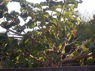

|  | Vangueria madagascariensis commonly known by the names Spanish-tamarind,tamarind-of-the-Indies, or voa vanga,is a species of flowering plant in the family Rubiaceae native to the African continent having edible fruit. It is the type species of the genus Vangueria and was described in 1791 by Johann Friedrich Gmelin. Vangueria madagascariensis has large, orange fruits that are edible and often consumed locally. Vangueria madagascariensis is native to Angola, Benin, Cameroon, Central African Republic, the Democratic Republic of the Congo, Ethiopia, Ghana, Kenya, Madagascar, Malawi, Mali, Mozambique, Nigeria, South Africa (in KwaZuluNatal and Transvaal), Sudan, Swaziland, Tanzania (inclusive of the Zanzibar Archipelago) and Uganda. |